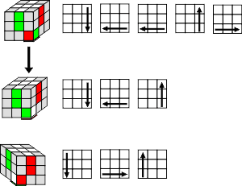
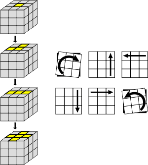

2. Put the GREEN centre piece in front (facing you)
3. Find the GREEN/ WHITE edge piece (it only has 2 colours) and turn it to one of the positions shown below (keeping white on top and green in front)
4. Choose the options below that matches your situation and follow the arrow steps to place the GREEN/ WHITE edge piece in place.
Keeping White on top, turn the cube so that a different colour face (center) is toward you. Follow the above instructions again. Repeat with the other two faces until the White cross is complete.
This step is intuitive; you can do it for sure but it does take a little practice. Just move the white edges to their places not messing up the ones already fixed.
STEP 2 - COMPLETE THE FIRST LAYER CORNERS
1. Keep the WHITE cross on top
2. Put the GREEN centre piece in front (facing you)
3. Find the GREEN/WHITE/RED corner (it has 3 colours) and place it in between the Green and Red centres without disturbing the white cross. You do this by turning the bottom layer only. (See the image below)
4. Choose from the steps below to place the GREEN/WHITE/RED corner piece in place without disturbing the white cross.

Possible Problem:
The corner you are looking for is in the top layer, but in the wrong position or turned the wrong way around. Turn the cube so that the corner is in the front right top corner then move the corner to the bottom layer by following the following steps.
Solution:
Perform these steps , then choose again from steps above to put the corner in place.
Keeping the White cross on top, turn the cube so that a different colour face is toward you. Follow the above instructions again. Repeat with the other two faces until the white layer is complete.
STEP 3 - COMPLETE SECOND LAYER
1. Keep the WHITE face on top
2. Find the GREEN/RED edge piece
3. If it is in the bottom layer, then turn the bottom layer to match the edge with the centre colour (see fig below).
4. If the edge is not in the bottom layer, then go to Step C
5. Choose from the steps below to place the edge piece in place, which will be to the Right (A) or Left (B)..
A/B
C - Possible Problem:
The edge piece you want to move is in the second layer, but in the wrong position or the wrong way around.
Solution: Turn the cube so that the edge is in the front layer then do either solution above to move the piece into the bottom row. The go back to step 3 above.
Continue with steps A/B with different centers facing you until the second layer is complete
STEP 4 - COMPLETE THE THIRD LAYER CROSS
1. Turn the cube over (White is now on the bottom and the yellow centre on top)
2. You should find that there is 0, 2 or 4 pieces (of the cross) facing upward. Ignore the corners for now.
3. Perform the algorithm below to get to the yellow cross. Make sure your cube is orientated is shown in the image.

Repeat this algorithm till you get the yellow cross
Swap edge pieces to the correct position (Permute):
1. Rotate the top layer until you have 2 or 4 edge pieces matching with the center colors.
2. Hold the cube so that the correct edge pieces are at the back and right face.
3. Use the algorithm below to put the edge pieces in the correct position.
Possible Problem:
Two pieces that are in the correct position are opposite each other.
Solution: Perform the steps above once and then turn the cube like the one shown above and perform the steps again.
STEP 5 - COMPLETE THE THIRD LAYER CORNERS
(1) First we will put the corners in the correct position (A).
You will now have either 0, 1 or ALL the corners pieces will be in their correct positions, either the right way up or reversed.
If one corner piece is in the correct corner turn the cube to that this correct corner is in the front top right position. The piece is in the correct position, BUT may not be turned the correct way around.
(A)
Repeat the sequence until all the corners are in the correct position.
Possible Problem: None of the corners is in the correct position.
Solution: Perform the steps in (A) once with ANY side facing you (YELLOW at the top). Now one corner will be in the correct position. Proceed with (A) above.
The next steps will turn the corners (one by one) the correct way and ultimately solve the cube.
NOTE: THIS ROUTINE MAY APPEAR TO UPSET THE REST OF THE CUBE. DO NOT DESPAIR AND KEEP THE SAME SIDE FACING YOU IT WILL ONLY BE SOLVED ONCE THE LAST CORNER IS ORIENTATED.
Repeat the moves until the YELLOW side of the corner piece is on top. You may have to do it 1-2 times.
KEEP THE SAME SIDE FACING YOU: Rotate the TOP LAYER ONLY until the next corner piece to be rotated is in the top right position. Repeat the above sequence until the YELLOW side of the corner that you are rotating is on top. Continue the process until the cube is complete.